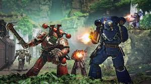

Frakce chaosu
- Chaos deamon
- Chaos space marines
- Chaos knights
- Death guard
- Thousand sons
- World eaters
Chaos Daemons
Chaos Daemons jsou čistými projevy temných sil Warpového světa a každého z bohů Chaosu. Tvoří armády démonických entit, jako jsou zuřiví Bloodletters Khorna, zákeřní Horrory Tzeentche, moroví Plaguebearers Nurgla nebo svůdné Daemonettes Slaaneshe. Démoni Chaosu nejsou fyzickými bytostmi, ale spíše projevy energií svých pánů, které zasahují do materiálního světa skrze Warpové trhliny. Chaos Daemons bojují ve jménu svých bohů a přinášejí zkázu a zvrácenou sílu kamkoliv vstoupí.
Chaos Space Marines
>Chaos Space Marines, známí také jako Odpadlíci, jsou bývalí Space Marines, kteří se odvrátili od Císaře a Impéria během Horovy Hereze. Padli pod vliv Chaosu a stali se nemilosrdnými válečníky vedenými temnými bohy. Každá legie Chaos Space Marines má své specifické schopnosti, od nenávistné brutality Black Legion po pokřivené čarodějnictví Thousand Sons. Chaos Space Marines jsou elitní a nebezpeční protivníci, kteří zuřivě bojují proti svým bývalým bratřím ve zbrani.
Chaos Knights
Chaos Knights jsou obrovští váleční titáni, kteří se odvrátili od svého původního účelu pod vlivem Chaosu. Tyto mohutné stroje, pilotované pokřivenými šlechtici, přinášejí na bojiště devastaci a strach. Každý Chaos Knight je temným odrazem svého původního protějšku, zdobený démonickými runami a poháněný Warpovou energií. Jejich ničivá síla a ikonický vzhled z nich dělají jedny z nejděsivějších zbraní Chaosu.
Death Guard
Death Guard je legie Chaos Space Marines zasvěcená bohu rozkladu, Nurgleovi. Tito vojáci jsou známí svou neuvěřitelnou odolností a schopností šířit morové choroby po celém bitevním poli. Death Guard, vedená Mortarionem, bývalým primarchem, byla během Horovy Hereze navždy zkažena Nurgleovým „darem“. Jejich jednotky jsou doslova chodící rozklad, od Plague Marines po obludné démony, kteří rozsévají zkázu všude, kde se objeví.
Thousand Sons
Thousand Sons je legie Chaos Space Marines, která se specializuje na psychické schopnosti a magii. Vedení svým primarchem, Magnus the Redem, padli pod vliv Tzeentche, boha změn. Tato legie byla prokleta během Rubric of Ahriman, což způsobilo, že většina jejích vojáků byla přeměněna na prázdné brnění naplněné jen prachem a magií. Thousand Sons jsou mistři Warpové energie a jejich bojové schopnosti jsou založeny na devastující síle psychického útoku.
World Eaters
World Eaters jsou legie Chaos Space Marines zasvěcená Khorneovi, bohu krve a války. Tito válečníci, známí svou neukojitelnou touhou po bitvě a krveprolití, jsou čirou definicí brutality. Pod vedením svého primarcha, Angrona, se World Eaters stali armádou šílených berserkerů, kteří odvrhli disciplínu ve prospěch divokého masakru. Jejich ikonické jednotky, Khorne Berserkers, jsou elitní válečníci zaměřující se na boj zblízka, kteří nikdy neustupují a neberou zajatce.
Každá z těchto frakcí Chaosu přináší na bitevní pole jedinečné schopnosti a zvrácené cíle, přičemž všechny sdílejí nenávist vůči Impériu a touhu po zničení.